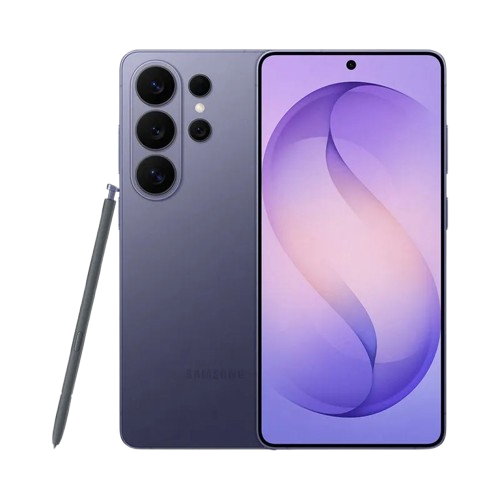

SAMSUNG GALAXY · 2026
Технологии, которые
Технологии, которые
хочется держать в руках.
Исследуй линейку Samsung Galaxy: флагманские S, складные Z и универсальные A. Смотри характеристики, сравнивай модели и выбирай свой смартфон.
● 25 моделей · 3 серии · подробное сравнение

ПОПУЛЯРНЫЕ СЕРИИ
Все серии →
Найди свой Galaxy
РЕКОМЕНДУЕМ
Все смартфоны →
Популярные смартфоны
25моделей
3серии Galaxy
16параметров для сравнения
100%учебный проект
ИНТЕРАКТИВ